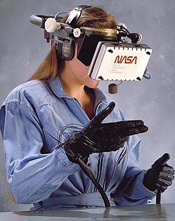

Virtual Reality
Forms and Methods
One method by which virtual reality can be realized is simulation-based virtual reality. Driving simulators, for example, give the driver on board the impression of actually driving an actual vehicle by predicting vehicular motion caused by driver input and feeding back corresponding visual, motion and audio cues to the driver.
One method by which virtual reality can be realized is simulation-based virtual reality. Driving simulators, for example, give the driver on board the impression of actually driving an actual vehicle by predicting vehicular motion caused by driver input and feeding back corresponding visual, motion and audio cues to the driver.
With avatar image-based virtual reality, people can join the virtual environment in the form of real video as well as an avatar. One can participate in the 3D distributed virtual environment as form of either a conventional avatar or a real video. Users can select their own type of participation based on the system capability.
In projector-based virtual reality, modeling of the real environment plays a vital role in various virtual reality applications, such as robot navigation, construction modeling, and airplane simulation. Image-based virtual reality systems have been gaining popularity in computer graphics and computer vision communities. In generating realistic models, it is essential to accurately register acquired 3D data; usually, a camera is used for modeling small objects at a short distance.
Desktop-based virtual reality involves displaying a 3D virtual world on a regular desktop display without use of any specialized VR positional tracking equipment. Many modern first-person video games can be used as an example, using various triggers, responsive characters, and other such interactive devices to make the user feel as though they are in a virtual world. A common criticism of this form of immersion is that there is no sense of peripheral vision, limiting the user's ability to know what is happening around them.
A head-mounted display (HMD) more fully immerses the user in a virtual world. A virtual reality headset typically includes two small high resolution OLED or LCD monitors which provide separate images for each eye for stereoscopic graphics rendering a 3D virtual world, a binaural audio system, positional and rotational real-time head tracking for six degrees of movement. Options include motion controls with haptic feedback for physically interacting within the virtual world in an intuitive way with little to no abstraction and an omnidirectional treadmill for more freedom of physical movement allowing the user to perform locomotive motion in any direction.
Augmented reality (AR) is a type of virtual reality technology that blends what the user sees in their real surroundings with digital content generated by computer software. The additional software-generated images with the virtual scene typically enhance how the real surroundings look in some way. AR systems layer virtual information over a camera live feed into a headset or smartglasses or through a mobile device giving the user the ability to view three-dimensional images.
Mixed reality (MR) is the merging of the real world and virtual worlds to produce new environments and visualizations where physical and digital objects co-exist and interact in real time.
A cyberspace is sometimes defined as a networked virtual reality.
Simulated reality is a hypothetical virtual reality as truly immersive as the actual reality, enabling an advanced lifelike experience or even virtual eternity.